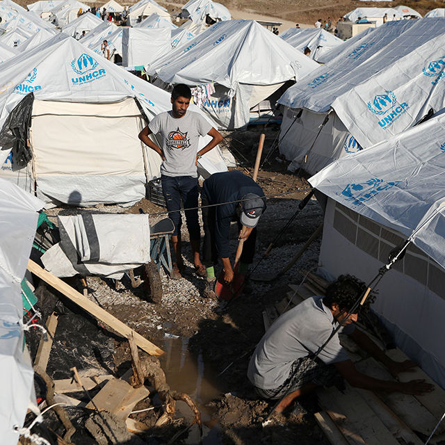
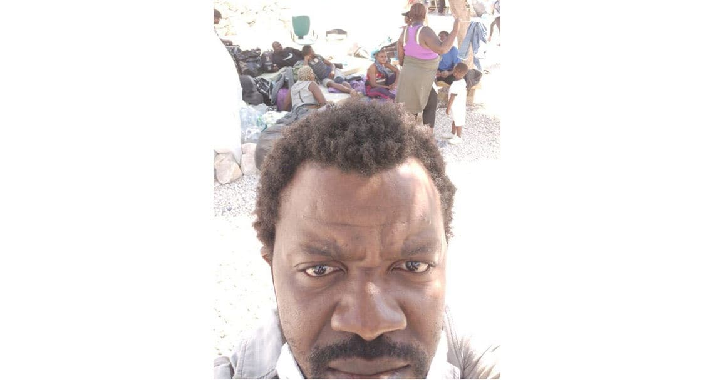
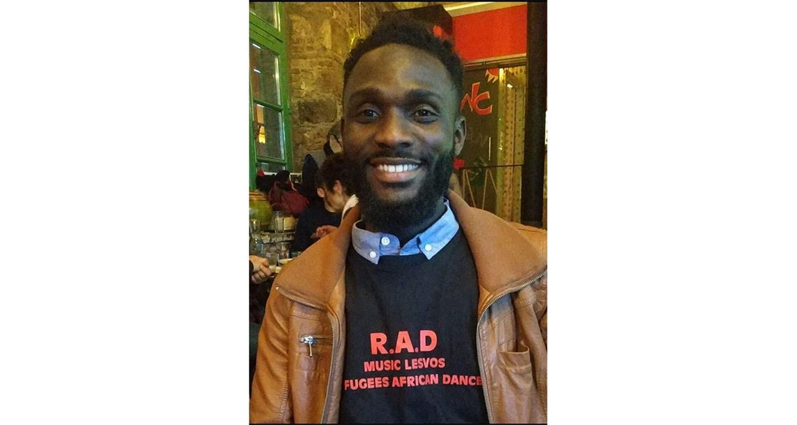

Geflüchtete auf Lesbos: Die Situation im Ersatzlager Kara Tepe
„Corona ist mittlerweile die kleinste Sorge, die es im Camp gibt“
Zwei Geflüchtete und eine Helferin sprechen darüber, wie sich ihre Lage seit dem Brand in Moria verändert hat.
Protokolle von Niko Kappel und Raphael Weiss

Im neuen Lager Kara Tepe haben Zelte keinen Boden – Regen wirkt sich verheerend aus.
Foto: Elias Marcou / REUTERS
In der Nacht auf den 9. September 2020 brannte das Geflüchtetenlager Moria auf der griechischen Insel Lesbos fast komplett ab. In dem Lager lebten bis zum Brand mindestens 12 600 Geflüchtete, einige Schätzungen gingen von bis zu 16 000 aus. Einige Geflüchtete, vor allem Kinder ohne Begleitung, wurden nach dem Brand im Camp Moria auf das Festland und teils in andere Länder gebracht. Für die Verbliebenen wurde auf Lesbos das Ersatz-Lager Kara Tepe errichtet, das sich direkt am ägäischen Meer befindet. Nach offiziellen Angaben leben dort etwa 9200 Menschen.
„Ich musste in das neue Lager, weil ich sonst nirgendwohin konnte“
Paul Muzangueno, 28, flüchtete aus dem Kongo, lebte 14 Monate im Camp Moria und ist mittlerweile im neuen Camp untergebracht.

Foto: Privat
„Meine Situation hat sich nach dem Brand nicht verbessert, obwohl ich damit eigentlich gerechnet hatte. Ich dachte, dass jetzt, wo dieses schreckliche Lager weg ist, endlich alles besser wird. Die ersten zehn Tage nach dem Feuer lebte ich auf der Straße, unter sengender Sonne und Belästigung durch die Polizei. Ohne Wasser und ohne Essen. Wir waren alle wie Herdentiere zusammengepfercht. Wir haben versucht, unsere Situation durch Demonstrationen zu verbessern, aber die Proteste wurden mit Tränengas zerstreut. Nachts war es sehr hart, unter freiem Himmel zu schlafen. Dann kamen die Kälte und das schlechte Wetter, das hat alles noch schlimmer gemacht.
Ich musste in das neue Lager, weil ich sonst nirgendwohin konnte. Man kommt von der Insel ja nur mit dem Flugzeug oder dem Boot weg. Ich konnte nichts tun und musste der Polizei in das neue Lager folgen. Dort gibt es immer noch kaum sanitäre Anlagen. Wir mussten uns im Ägäischen Meer waschen. Das geht jetzt nicht mehr, weil es zu kalt ist.
Der elektrische Strom kommt von Generatoren, die in keinem gutem Zustand sind. Es gibt Tage, da ist der Strom komplett weg. Es gibt auch im neuen Camp keine Ansprechpartner, an die wir uns wegen unser Asylverfahren wenden können. Die Hilfsorganisationen haben keinen Zugang zum Lager, die griechische Regierung will alles selbst verwalten. Und die tut weiterhin nichts für uns.“
„Ich habe mich dazu entschlossen, wieder nach Deutschland zurückzugehen“
Foto: Privat
Romy Bornscheuer, 22, Medizinstudentin, hat die Kampagne „Europeans For Humanity“ gegründet und arbeitet für Healthbridge Medical auf Lesbos:
„Ich habe die Insel Lesbos einige Tage nach dem Brand verlassen. Wir haben anfangs noch versucht, zu helfen, haben Menschen auf der Straße medizinisch erstversorgt, wurden aber immer wieder von Sicherheitskräften und Behörden in unserer Arbeit behindert. Eine Freundin hat mir erzählt, dass sie 5000 Mahlzeiten und 6000 Wasserflaschen in das neue Camp bringen wollte, aufgehalten wurde und vor den Augen der Polizei die Nahrung vernichten musste.
Ich habe mich schließlich dazu entschlossen, wieder nach Deutschland zurückzugehen. Nicht unbedingt, weil es für mich zu gefährlich war, sondern weil ich mittlerweile der Meinung bin, dass die NGOs auf Lesbos nicht wirklich helfen. Eher im Gegenteil. Sie helfen dabei, dieses Leid und dieses Unrecht der EU aufrecht zu erhalten. Dadurch bleiben die Geflüchteten einfach nur länger in dieser unmenschlichen Situation. Die Menschen aus dem Camp, denen ich von meiner Entscheidung erzählt habe, waren anfangs geschockt, aber mittlerweile sehen es die meisten, mit denen ich spreche, so wie ich.
Auch das Spendensammeln bewerte ich mittlerweile negativ. Ich weiß, dass diese Ansicht sehr unpopulär ist, aber das Geld hilft dabei, dieses System aufrechtzuerhalten. Es ist alles nur eine Bekämpfung der Symptome, nicht der Ursache. Dass das Fehlverhalten der EU und der griechischen Regierung vertuscht wird, weil die Menschen durch externe Mittel am Leben gehalten werden. Langfristig bringt das nichts, sondern bereinigt nur das Gewissen der Spender*innen. Sie können sich mit möglichst geringem Aufwand so fühlen, als hätten sie etwas getan, ohne dabei eigene Werte oder Haltung hinterfragen zu müssen. Aber das reicht längst nicht mehr. Alle müssen etwas tun, Zeit opfern, sich einsetzen, demonstrieren gehen.
Seit ich in Deutschland bin, habe ich mehrere Projekte gestartet. Bei „A Wave of Solidarity“ projizieren wir Videobotschaften von Geflüchteten an politisch relevante Gebäude wie das EU-Parlament oder die EU-Kommission. Wir haben Projekt-Camps und Demos gestartet. Die Situation in den Lagern ist einfach unmöglich.
Diese weißen Zelte des neuen Lagers, die die griechische Regierung so schön mit Drohnen-Aufnahmen inszeniert hat, haben keinen Boden und stehen auf Dreck. Durch die Lage direkt neben dem Meer war es nur eine Frage der Zeit, bis das Camp überflutet wird, was jetzt eingetreten ist. Die Menschen frieren ohne Ende, haben kein fließendes Wasser, waschen sich im kalten Meer.
Corona ist mittlerweile die kleinste Sorge, die es im Camp gibt. Wenn man täglich ums Überleben kämpft, rückt so eine schwer greifbare Gefahr in den Hintergrund. Ich weiß nicht genau, ob die Bewohner*innen im Camp noch Vertrauen in die EU haben, so generell kann man das auch nicht beantworten. Viele klammern sich zumindest an die Hoffnung, dass sie vielleicht irgendwann doch noch friedlich und ohne um ihr Leben zu kämpfen leben können.“
„Die Menschen werden sofort, wenn sie irgendwelche Leiden haben, mit Corona-Verdacht in isolierte Zelte gesteckt“

Foto: Privat
Rouddy Kimpioka, 30, lebt seit drei Jahren auf Lesbos. Er kam aus dem Kongo nach Moria und lebt mittlerweile in Mytilini, der Hauptstadt der Insel Lesbos.
„Mehr als 2300 Menschen wurden seit dem Feuer auf das Festland gebracht, auch einige meiner Freunde. Das macht mich froh. Aber für die Menschen hier auf der Insel ist die Situation immer noch sehr schlimm. Das Wetter ist sehr schlecht, es hat so viel geregnet, dass das neue Camp überflutet wurde. Wasser ist in die Zelte gelaufen. Die Menschen hatten die Wahl, ob sie in vollgelaufenen Zelten schlafen oder im strömenden Regen unter freiem Himmel. Es ist gerade sehr windig und dadurch auch sehr kalt. Ich habe grade das Gefühl, dass jeden Tag ein neues Problem auftaucht.
Im neuen Camp leben meiner Einschätzung nach immer noch 8000 bis 9000 Menschen. Die Menschen, die immer noch auf der Straße leben, nicht mitgezählt. Ich habe das Camp nur einmal betreten, eigentlich ist es nicht erlaubt reinzugehen, auch NGOs, die helfen wollen, nicht. Viele NGOs verlassen gerade die Insel. Sie wären sonst gezwungen, mit der Regierung zusammenzuarbeiten und das wollen viele nicht, weil sie dann den Menschen nicht mehr direkt helfen können. Es ist schwierig, um das Camp herum zu arbeiten, weil es direkt am Wasser liegt und auf der anderen Seite eine große Straße ist.
Ich habe gestern mit einer Frau aus dem Camp gesprochen. Sie ist Asthmatikerin. Sie sagte, sie sei deshalb zu den Beamten im Camp gegangen, um nach Medizin zu fragen. Ohne sie zu testen, hätten die dort zu ihr gesagt, dass sie Covid-19 hätte. Auf ihre Erklärungsversuche bezüglich ihres Asthmas seien die Beamten gar nicht eingegangen. Sie zwangen die Frau, sieben Tage in einem isolierten Zelt zu bleiben. Wegen solcher Geschichten haben die Menschen Angst, zum Arzt zu gehen. Es wird nicht getestet, die Menschen werden sofort, wenn sie irgendwelche Leiden haben, mit Corona-Verdacht in isolierte Zelte gesteckt. Das macht es natürlich schwieriger, die wahren Corona-Fälle zu entdecken, zu behandeln und zu isolieren.
Mein Musikprojekt mache ich immer noch, ich will nicht, dass es aufhört. Es gibt den Menschen, die noch hier sind, Hoffnung und darauf will ich nicht verzichten. Es leben immer noch einige Musiker im neuen Camp, wir treffen uns meistens davor. Gestern hatten wir Probe, das war schön. Man muss ja irgendwie weiter machen.“


Jetzt diskutieren: